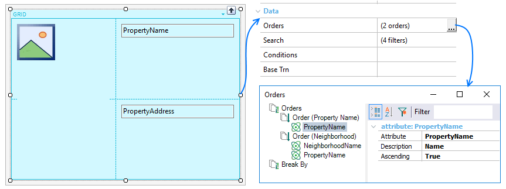

Establishes different criteria for ordering the grid information, allowing the end user to select any of them at any time. Thus, it will be a list of several 'Order' items, each one defining order criteria, identified by a name given by the developer, and compound by a list of attributes (ascending or descending). Whether more than one 'order' is specified, at runtime the user will see a combo box with all the named 'orders' to choose.  Run-time/Design-timeThis property and associated node properties apply only at design-time. Orders nodeDefines which orders will be defined on the grid. For adding a new order you must:
To remove an Order or an attribute from an Order, select the item, right-click, option Delete (or SUPR). Every Order node defines a set of properties for customizing the ordering behavior.
Each Order node defines a set of Attribute nodes which have three properties each one.
Break By nodeDefines múltiple control breaks by adding one or more attributes without caring the order listed.
For adding a new order you must:
Each Attribute node under a Break By node will have only one property for changing an attribute in the break by without removing it.
Example Based on the grid displayed during the introduction, the runtime behavior of such control will be as follows. Scope
See Also
SampleThis example is available on RealEstate.
|
| Backlinks | ||
| Order property | Orders and Filters in Grids for Smart Devices | Search property |